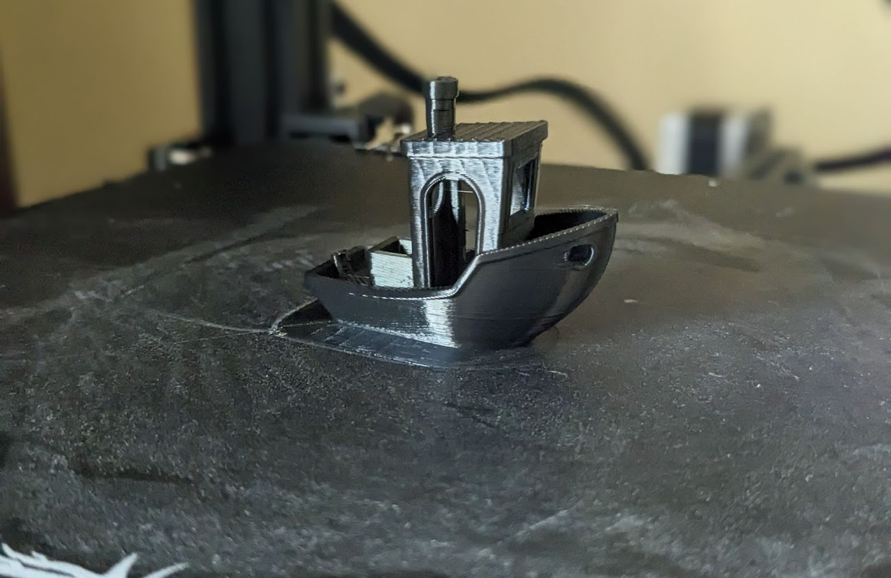
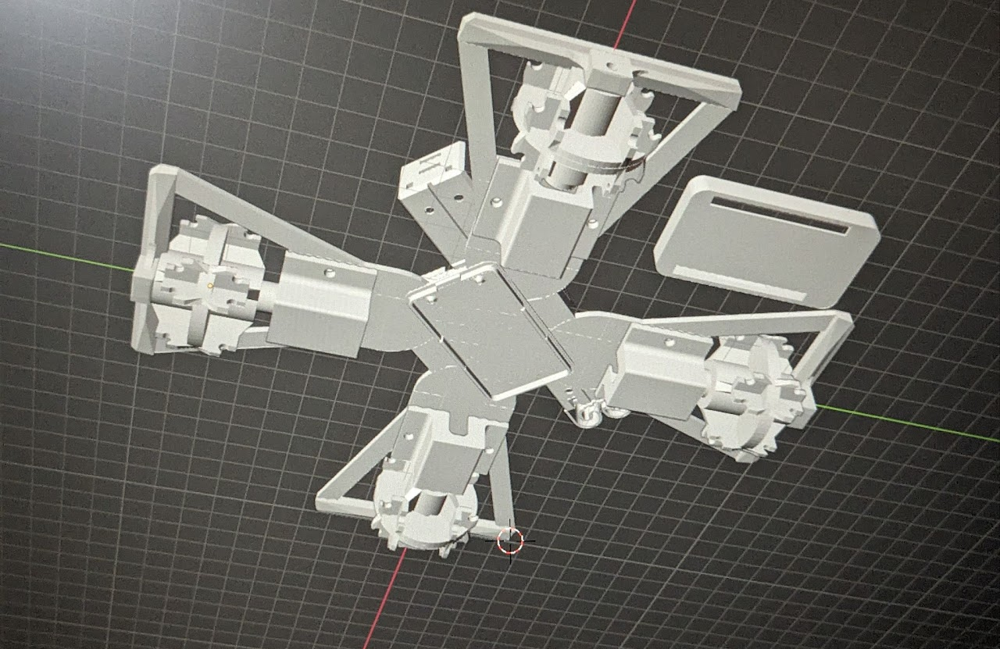

3D Printing
In middle school, I began using my library's Lulzbot Taz 6 to fabricat emy projects and designs.

3D Printing
In 2022, as I became more serious about engineering, I purchased an Ender 3 with saved up money and heavily modified it to meet the specs I wanted.


Images 3–5: The Gyatt Chronicles
A visual saga: hard fits, space drips, and the light-bending gyatt moment.

Image 6: Sigma Bootcamp
Only 1 in 100 survive. This pic proves you're him.

Image 7: Skibidi Surveillance
The government doesn't want you to see this JPEG.

Image 8: Rizz Transcendence
Bro ascended. This photo is the last known frame.

Image 9: Banana Conclusion
You’ve come full circle. Banana. Skibidi. Rizz. Loop complete.